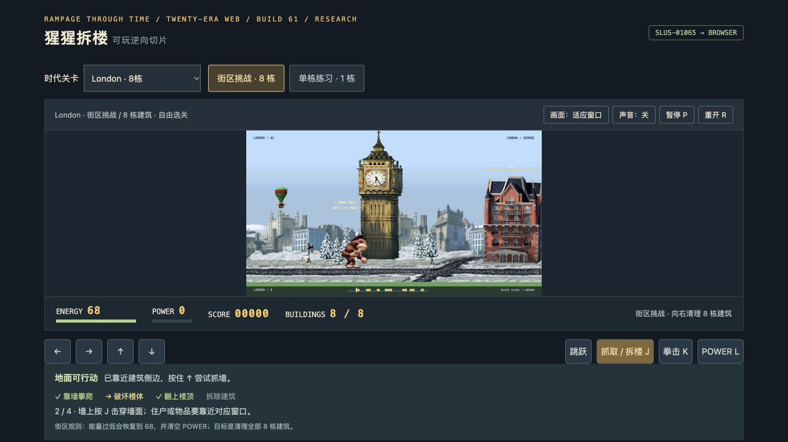

二十个时代代表关 / George · 电脑与手机屏幕按钮
可自由选关或连续闯关。Old West · Avalon · Area17 · London
本次修复高楼下爬卡住，改善部分住户逃跑的显示连续性；按当前关加载图集，并停止准备/暂停画面的重复绘制。保留敌人强度、动作与存档规则。
方向键/WASD移动，↑攀爬，J抓取/拆楼，K拳击，Space跳跃，满POWER按L，P暂停，R重开。声音可在页面中启用；存档保存在当前浏览器与网址，退出后从当前时代起点继续。运行无需ROM、BIOS或后端。
二十关完整手机验收依用户安排暂缓，桌面结果不替代真机或FPS保证。58敌人横向显示专项通过保留。
研究复刻，包含原作提取图像和部分逆向逻辑，原作名称及内容权利归相应权利人。不是全部60城市或完整原引擎。少数住户缺失原图使用明确的当前关跑步帧视觉替代；Cleito当前资料未证明独立游泳。声音为合成音效，无原音乐。
61性能报告 · 高楼下爬报告 · 住户视觉报告 · 验收状态 · 来源与边界
